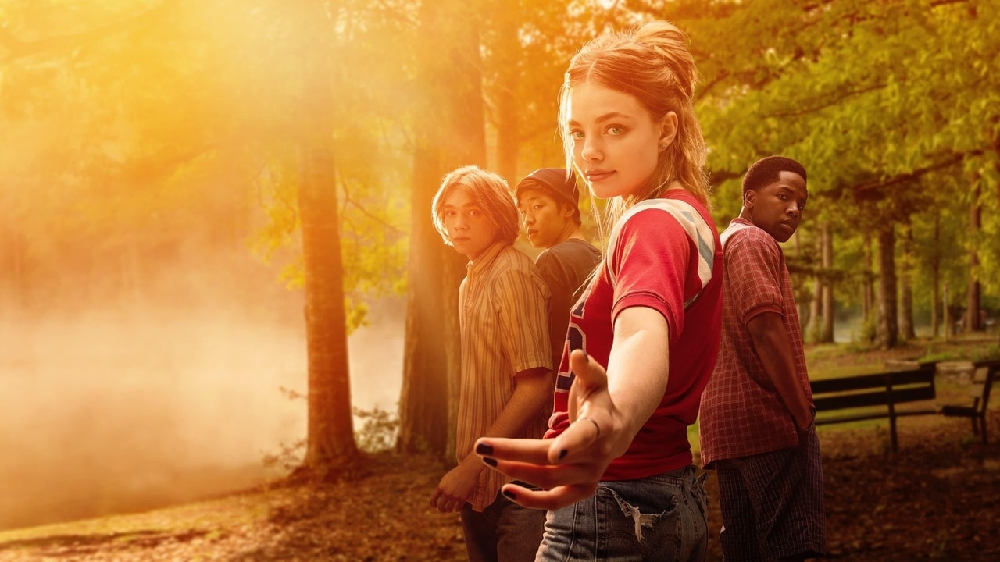
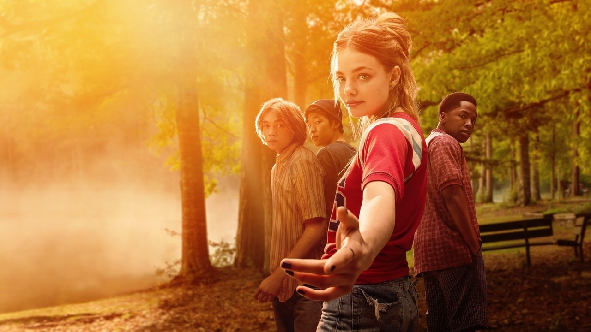

8.0 / 10
7h 6m | TV Mini Series | Drama, Romance | 2019
Teenager Miles enrolls in boarding school to try to gain a deeper perspective on life;
after an unexpected tragedy, Miles and his friends try to make sense of what they have been through.
Trailer :